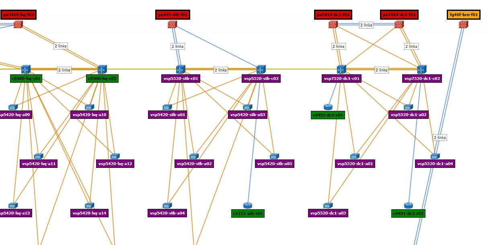
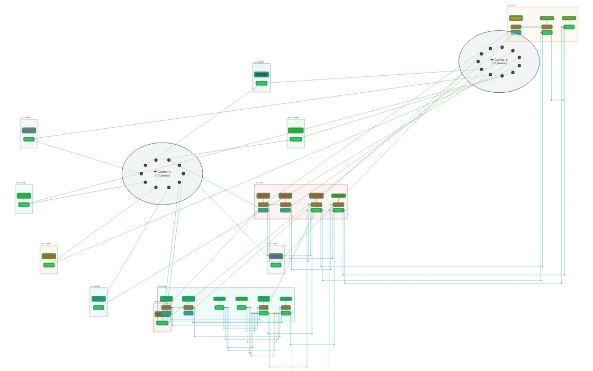
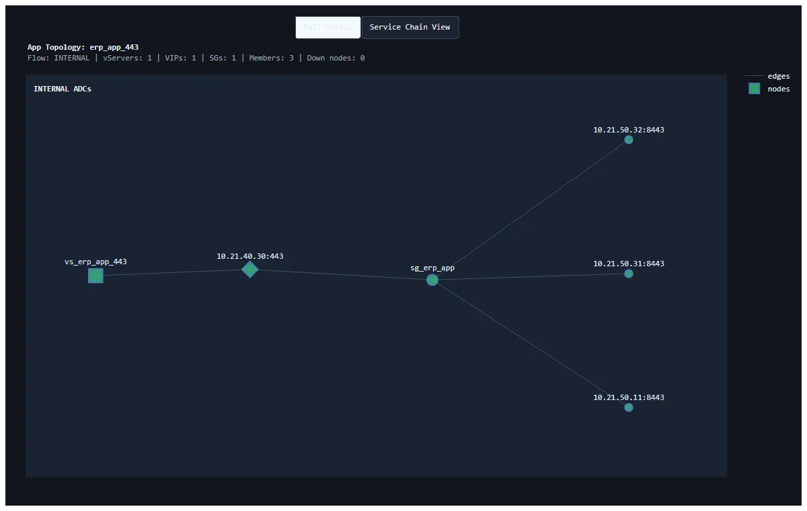

NetDevOps consultancy
Network automation, built by network engineers.
Devopty designs and builds automation for enterprise networks: discovery, documentation, audit and controlled change across switches, firewalls, wireless, load balancers and cloud.
- Read-only by defaultCollection never alters a device
- Changes are signedNamed devices, typed confirmation
- Multi-vendorNetwork, security and cloud
Your network
- Switches and routers
- Firewalls
- Wireless
- Load balancers
- Cloud networks
Devopty automation
- CollectRead-only, under a signed policy
- CheckAgainst your standards
- ChangeOnly when authorised
What you get
- As-built reports
- Topology maps
- Audit findings
- Inventories
- Logged changes
Services
Four ways we work on your network
Each engagement uses tooling we have already built and run on live networks, adapted to your platforms and your change process.
-
Discover and document
An evidence-based record of the network as it is: as-built reports, topology, inventory and findings, generated from the devices themselves.
Delivered with Netopty -
Audit and assure
Recurring checks against your standards: configuration compliance, software vulnerabilities, hardware support and lifecycle, and firewall policy.
-
Automate operations
The tooling your team reaches for every week: backups, searches, reports, and integration with NetBox, your monitoring and Confluence.
-
Change with control
Upgrades, account changes and bulk remediation run as governed changes: named devices, a signed authorisation, typed confirmation and a full log.
Our product
Netopty: network discovery and as-built documentation
Netopty is the first of our tools to become a product. It collects evidence from your switches, firewalls and cloud networks and turns it into a complete as-built report with a findings register.
- 25 hospital networks documented in five working days
- An on-site collector, an Azure-hosted service and a customer portal
- Every statement in the report traces back to collected evidence
Automation library
Built and working. Not yet packaged.
Beyond Netopty, we have a library of working automation. It is not sold as a product yet. We bring it to an engagement and adapt it to your environment.
-

Interactive network topology mapDevices, links and layers on one map you can search and filter. -

Routing topology and healthBGP peers and OSPF neighbours by site and carrier, with sessions that are down shown in red. -

NetScaler service diagramsEach virtual server traced through its service group to the servers behind it.
Real output from our tools, generated from a fictional demonstration network. Select an image to see it full size.
| Area | Report | Audit | Map and document | Controlled change |
|---|---|---|---|---|
| Switching and campus | Yes | Yes | Yes | Yes |
| Firewalls and Panorama | Yes | Yes | Yes | Yes |
| Wireless | Yes | Yes | Not yet | Yes |
| Load balancers | Yes | Not yet | Yes | Not yet |
| Cloud and virtualisation | Yes | Not yet | Yes | Not yet |
| Source of truth and monitoring | Yes | Yes | Not yet | Yes |
-
Switching and campus
Switch estate toolkit
- Configuration backup and audit across a chosen set of devices
- Topology mapping and full network documentation
- Find an access point or a MAC address; list port status
- Device account administration as a governed change
Cisco · Extreme · Juniper · Arista · HPE
-
Firewalls
Panorama and policy tools
- Firewall estate reports from Panorama
- Rulebase, address and service workbooks from device-group configuration
- URL access pre-check, rated green, amber or red
- Policy check across security, NAT and decryption rules
- High-availability upgrade assistant
Palo Alto Networks
-
Wireless
Controller and access point audits
- Access point and client audits for each controller pair
- Disconnected access points, with the switch and port each one uses
- Find which access point a client is on
- Access point reboots and guest-session clean-up as governed changes
Extreme wireless and NAC
-
Routing and addressing
Routing health and IP inventory
- BGP, OSPF and routing-table health, shown as an interactive graph
- Every Layer 3 interface address in one inventory
- Duplicate and overlap checks, with suggested DNS names
Multi-vendor
-
Assets and lifecycle
Hardware, software and support
- Hardware inventory: chassis, modules, power supplies, fans, transceivers
- Software versions matched to known vulnerabilities and lifecycle dates
- Support-contract coverage checked by serial number
- Firmware upgrades: staged, checksum-verified and signed
Cisco · Extreme · Juniper · Palo Alto · NetScaler
-
Compliance
Configuration compliance engine
- Saved configurations checked against required and forbidden rules
- Reports by device and by site, with a compliance matrix
- Runs offline, with no device access needed
Any text-based configuration
-
Source of truth and monitoring
NetBox and monitoring gap analysis
- Devices that are monitored but missing from NetBox, and the reverse
- Prefix, VLAN and address lookups; reserve free addresses
- Reachability checks against monitored devices
NetBox · PRTG · LogicMonitor · Extreme XIQ
-
Load balancers
Virtual server reports and diagrams
- Virtual server and vendor-access reports
- Diagrams of each virtual server, with DNS names and certificate details
NetScaler
-
Cloud and virtualisation
Cloud resource and topology reports
- Resource reports for each cloud account
- Topology documentation per cloud
- Published to Confluence for your team
Azure · AWS · Google Cloud · VMware
How we work
Automation your change board can approve
Network teams are right to be wary of scripts that log in to production. Every tool we build runs inside the same four controls.
-
1
Read-only by default
Collection runs under a signed read-only policy that names the devices and the operations allowed.
-
2
Changes are authorised
Anything that alters configuration needs a signed change authorisation and a typed confirmation.
-
3
Credentials are contained
Passwords and keys are masked in everything the tools print or log.
-
4
Every run is recorded
Each run writes a log that your change and audit teams can review afterwards.
Ways to engage
Assess
Discovery and documentation
A fixed-scope engagement that documents your network and reports what we find.
Build
Automation for a defined problem
We adapt a tool from the library, or build a new one, and hand it over with documentation.
Run
Recurring audits and refreshes
Scheduled audits and documentation updates, so the record stays current.
About
Built on live enterprise networks
Devopty is a founder-led consultancy. The tools on this page were written to solve real operational problems on production networks, including a transition covering 25 hospital sites.
Platforms we work with
- Network
- Cisco, Extreme, Juniper, Arista, HPE
- Security and delivery
- Palo Alto Networks, Fortinet, Check Point, NetScaler, F5
- Cloud and virtual
- Azure, AWS, Google Cloud, VMware
- Systems of record
- NetBox, PRTG, LogicMonitor, Confluence
Contact
Tell us what you are trying to automate
A short conversation is usually enough to tell whether something in the library fits or whether it needs building.
hello@devopty.com